🎧 Prefer to listen? Open the audiobook
The Burner — Firm Power, Low Neutrons
The breeder makes the fuel. The burner is the machine that turns it into electricity — firm, around-the-clock electricity, made cleanly enough that the plant does not slowly poison itself in the making. This is the machine humanity has been trying to build since the first hydrogen bomb told us how much energy hides inside light nuclei: a star we can switch on for the grid and switch off for the night, that leaves no smoke in the sky and no thousand-year waste in the ground. If Hyperion is a foundry, the burner is the power station the foundry exists to supply. It is where the whole enterprise finally points at the thing everyone wanted from fusion in the first place: a wall socket that never dims and never warms the planet. And it is a completely different animal from the breeder. Not a doughnut. Not a tokamak. A long, straight magnetic bottle, roughly four hundred and forty metres of it — a plasma thread nearly half a kilometre long strung between two magnetic anchors — burning deuterium and helium-3 and pouring most of its energy out of its two open ends as a stream of charged particles that we catch and turn, as directly as physics allows, into current.
This chapter is about that machine: why it has the shape it has, how it actually holds a plasma still with nothing but fields and voltage, why the fuel it burns is the clean one, how it makes electricity without a full steam cycle, and — because honesty is the whole point of this book — exactly where it is not finished. The burner is the later act. It is funded by the breeder, its economics wait on cheap lunar helium-3, and it carries a single genuine physics gate that we will name plainly rather than bury. But the physics of it closes on paper, on measured efficiencies, and it is reproducible. That is a real thing, and it is worth walking through carefully.
Why a bottle, and not a doughnut
In the last chapter I described the dead end that forced two machines: you cannot take the tokamak — the shape that ignites easily on deuterium and tritium — and simply feed it the clean, aneutronic-leaning fuel you actually want to live with. Push a doughnut plasma to the temperatures that clean fuel demands and it radiates its energy away faster than the reaction can replace it. The geometry itself sets a ceiling. So the burner cannot be a tokamak.
It is a tandem mirror: a straight tube of plasma held in the middle, pinched at each end by an intense magnetic field that acts like a cork, or a mirror, reflecting most particles back toward the centre. Between the two end plugs sits a long, gently confined central cell where the fusion happens. The magnetic field lines run down the axis of the machine and — crucially — they are open. They do not close on themselves the way a tokamak's do. They thread straight out through the mirror throats at each end and into open space beyond.
That single geometric fact is the reason the burner exists in this form. A closed magnetic system, like a tokamak, traps its exhaust inside the doughnut; you have to bleed the energy out through the walls, which means heat, which means a steam cycle, which means a power station wrapped around a boiler. An open system lets the burned fuel leave — axially, straight out the ends — as a directed beam of charged particles you can steer onto a collector and convert to electricity on the spot. The open field line is not a leak to be plugged. It is the exhaust pipe, and it is the whole business model.
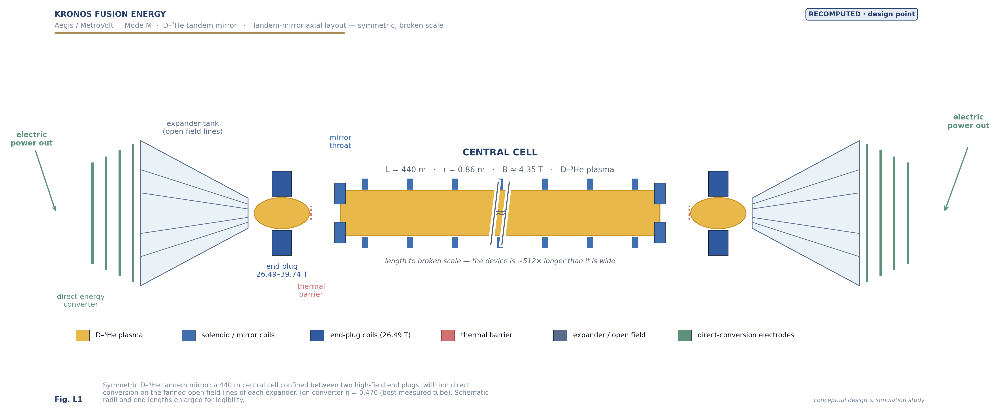
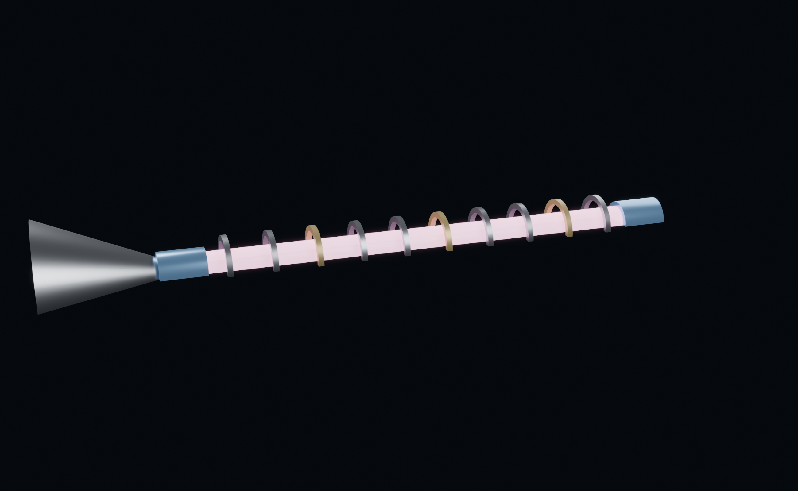
A tokamak traps its exhaust. A mirror aims it. That is the difference between boiling water and making electricity directly.
There is a second architectural dividend to the open geometry, and it is worth stating because it quietly removes a whole category of tokamak grief. Because the field lines are open, the machine has no closed flux surfaces, no X-point, no edge pedestal to destabilise. The violent edge instabilities that plague tokamaks — edge-localised modes, the ones that spit heat at the wall — simply do not exist as a phenomenon here. There is nothing for them to be. The burner needs no divertor. Its exhaust leaves axially onto the conversion collectors, and the counterpart engineering requirement is heat management at those end collectors rather than a war against disruptions inside a torus. That requirement is real, and worth a number. Something like 906 megawatts of power streams out through the two end apertures, and if you let it land unexpanded it would deposit around 195 megawatts per square metre — far past what any surface survives. The open geometry supplies its own remedy: because the field lines fan out as the field falls toward the converter, the same flux conservation that governs the mirror lets you spread the exhaust over a much larger area. Expanding from the 26.49-tesla ion-end throat down to about half a tesla is a roughly fifty-three-fold increase in area, and it brings the collector loading down to about 3.7 megawatts per square metre — a heat load an actively cooled surface can take. We state the expander field as a requirement rather than a solved design, because no such specification yet exists in the record, but the physics of the fan-out is not in doubt. Even the triangularity that shaped the breeder's plasma — the negative-δ trick that bought Hyperion its stability — is not a parameter this machine even possesses, because there are no closed flux surfaces to shape.
How the bottle actually holds a plasma
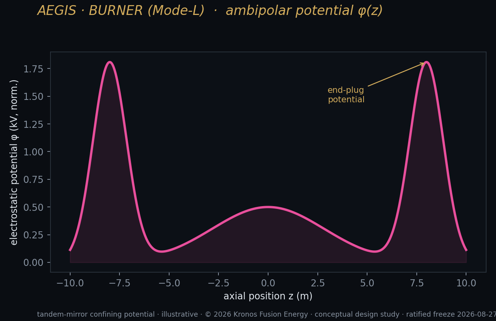
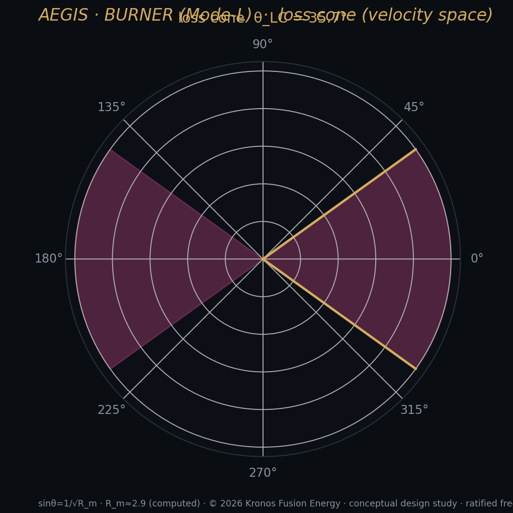
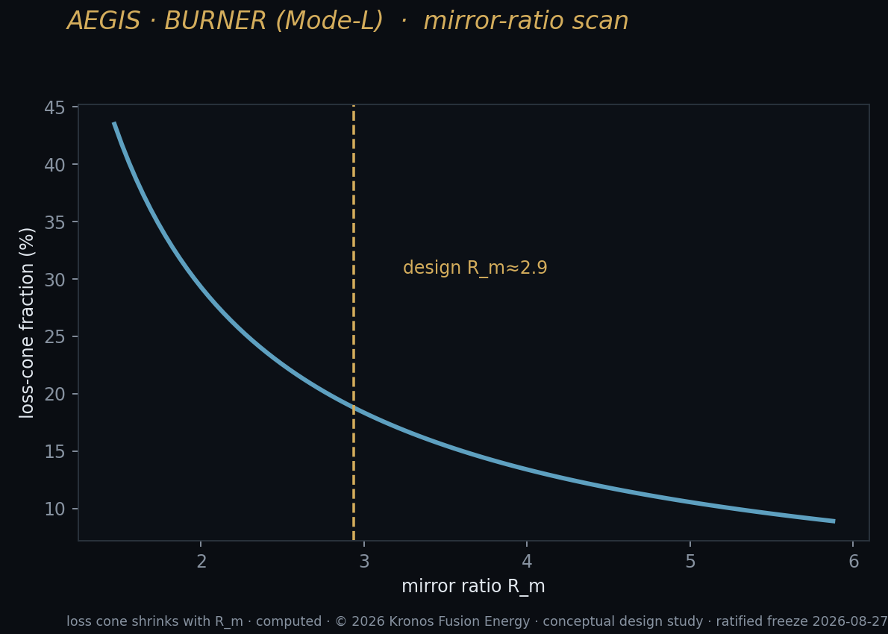
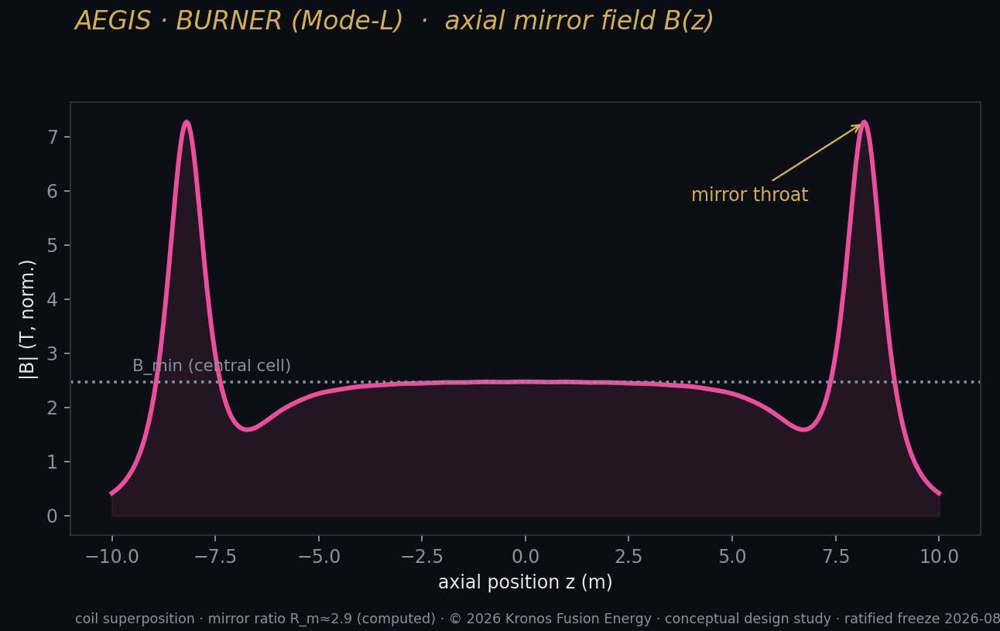
Say "magnetic bottle" and most people picture a field so strong the plasma simply cannot push through it. That is not quite how it works, and the difference is the whole story of the tandem mirror, so let me build it up in plain steps.
Start with a single magnetic mirror. A charged particle in a magnetic field does not travel in a straight line; it spirals around the field line as it moves along it. The physics that makes a mirror work is a conserved quantity — the magnetic moment, the ratio of the particle's spiralling energy to the local field strength — which stays very nearly constant as the particle drifts into stronger or weaker field:
µ = (perpendicular energy) ÷ B ≈ constant
When that spiral carries the particle into a region where the field gets stronger — the pinched throat at the end of the tube — holding µ constant forces its perpendicular (spinning) energy up, and since total energy is fixed, its forward motion is drained away until, for most particles, the motion reverses and the particle is thrown back toward the centre. That is the mirror: not a wall, but a reflector that turns particles around by geometry alone, powered by a conservation law. The trouble is that it is a leaky reflector. Any particle moving nearly straight along the axis — with too little perpendicular energy to trade — slips through the throat and is gone. Physicists call that escape hatch the loss cone, and how wide it is depends only on the mirror ratio, the field at the throat divided by the field in the middle: a bigger ratio, a narrower cone, fewer escapees. A plain magnetic mirror bleeds through that cone steadily, and no achievable mirror ratio closes it enough. On its own it is not good enough to hold a fusion plasma. That single fact killed the simple mirror as a reactor generations ago, and it is why the tandem configuration exists.
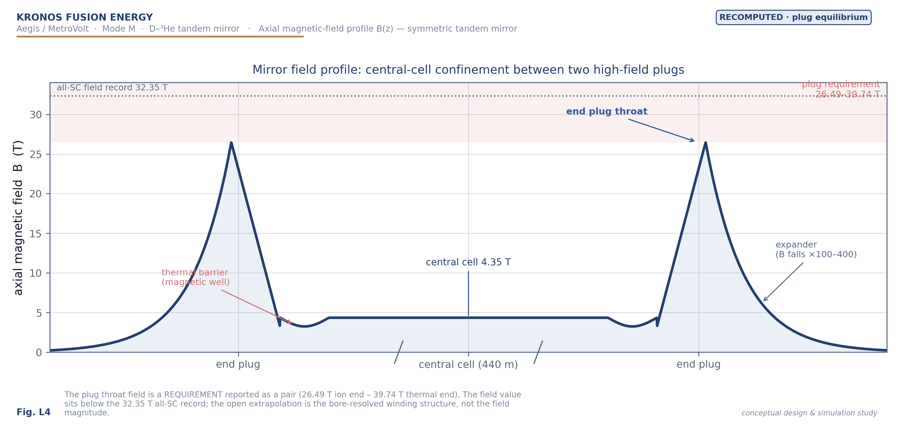
The tandem mirror closes that leak with a second cork made not of magnetic field but of voltage. Here is the mechanism, and it is one of the more elegant ideas in fusion. Electrons are roughly two thousand times lighter than ions and move far faster, so they drain out of a mirror more readily than the ions do. As they leave, they carry negative charge away with them, and the plasma left behind is nudged slightly positive. That is not a nuisance — it is the design principle. In a tandem mirror you deliberately amplify it: you pack each end plug with dense, hot plasma so that the plug floats at a high positive electric potential relative to the long central cell in the middle. To an escaping electron, that positive plug is an attractive wall that holds it in. To a positively charged central-cell ion trying to leak toward the exit, that same plug is a hill of like charge it must climb — and most ions simply do not have the energy to climb it. The fuel in the middle is held in place electrostatically, by an electric field, with the magnetic mirror doing only part of the work. Physicists call this ambipolar confinement, because it balances the two species: the potential that plugs the ions is set up by the behaviour of the electrons.
The height of that confining wall is what everything turns on, and it depends on one ratio in a way worth stating exactly:
eφ_i ≈ T_e · ln(n_plug ÷ n_central)
In words: the depth of the ion-confining potential (on the left, an energy) equals the electron temperature in the plug times the natural logarithm of the plug-to-central density ratio — how many times denser the plasma in the plug is than the plasma in the long central cell. So to build a taller wall you can either make the plug hotter or make it much, much denser than the middle. The logarithm is a hard master. Because the confining energy grows only as the logarithm of the density ratio, every extra volt of barrier costs you a multiplicative increase in plug density, not merely an additive one. Want to double the wall? You do not double the density ratio; you square it. That single, unforgiving piece of arithmetic is what produces the burner's one real gate, and I will name the number it forces later in the chapter.
The plug is a cork made of pressure and voltage, not of steel — and the wall it builds is only as tall as the plug is dense.
One more piece completes the picture, because it is the piece that has historically been hardest. The plug's confining potential is proportional to how hot its electrons are, so you want the plug electrons kept hot. But electrons conduct heat along a magnetic field line with ferocious efficiency; the cooler electrons of the long central cell, connected to the plug by those same field lines, would happily flow up and drain the plug's heat away — short-circuiting the very potential you are trying to build. The fix is a thermal barrier: a carefully shaped dip in the potential, sitting between the central cell and each plug, that thermally isolates the plug electrons from the central-cell electrons and lets the plug run hot and stand tall. The thermal barrier is not optional trimming. It is the component that makes the whole electrostatic scheme possible — and, as we will see, it is the component with the most troubled experimental history.
The clean fuel and the neutron ledger
Everything clean about the burner starts with what it burns. The primary reaction is worth boxing, because every good thing about the machine descends from it:
D + ³He → p (14.66 MeV) + ⁴He (3.67 MeV) — total 18.35 MeV, no neutron
Deuterium and helium-3 fuse into a proton and a helium-4 nucleus, releasing 18.35 million electron-volts, and in that primary reaction there is no neutron at all. Both products are charged. Both can be caught by a magnetic field and steered. Compare that to deuterium–tritium, where roughly eighty percent of the energy comes streaming out as fast, uncharged, wall-wrecking neutrons. The contrast is the entire reason to prefer this fuel for a power plant.
I want to be precise here, because precision is where credibility lives, and the temptation to oversell aneutronic fusion is a century old. D–³He is low-neutron, not zero-neutron — and it is worth being exact about where the leftover neutrons come from, because it is not from the reaction we are paying for. It is from the deuterium fuel keeping company with itself. Any plasma full of deuterium will have deuterons fusing with other deuterons, and that side reaction runs down two roughly equal branches:
D + D → T + p (charged, harmless to the walls)
D + D → ³He + n (2.45 MeV) (the neutron branch)
One branch makes a proton and a tritium nucleus — both charged, both harmless to the walls. The other makes a helium-3 nucleus and a 2.45-MeV neutron. And there is a second-order sting: the tritium produced by the first branch can itself fuse with deuterium, and that reaction throws off a 14-MeV neutron, the same wall-wrecking kind the breeder lives with. So the burner's neutrons are an unavoidable tax on having deuterium in the tank at all, not a property of the clean primary burn. In our design point that whole unavoidable neutron channel carries about 5.44 percent of the fusion power. The honest label is therefore not "aneutronic" but "low-neutron" — and 5.44 percent versus D–T's roughly 80 percent is not a rounding difference. It is the difference between a plant whose structure is steadily made radioactive and destroyed from the inside, and one whose walls stay largely intact for a working lifetime.
That number, moreover, is not a constant of nature — it is a knob, and the knob is the fuel mix. The neutron fraction depends on how much helium-3 you run relative to deuterium. The more helium-3 in the blend, the more of the burn goes down the clean primary channel and the less deuterium is left to fuse with itself and make neutrons. Across the operating window the neutron share falls from around 9.5 percent at the leaner mixtures down toward 2.8 percent at the richer ones, trading cleanliness against gain. We sit at a deliberate compromise — a helium-3 fraction of about 0.30 — rich enough to keep the burn clean, lean enough to keep the physics closing. The point is that "clean" here is a designed quantity with a dial on it, not a marketing adjective.
There is one further reaction people always ask about — the fully aneutronic ³He–³He channel — which looks like a free lunch and is not, because its three-body products smear their energy across a continuum a direct converter cannot lock onto; the direct-conversion section later in this chapter debunks it in full. The lesson it leaves is that for this machine what matters is not merely that the products are charged, but that they arrive at a directable, convertible energy.
The payoff of a low neutron count is threefold, and each part is concrete. First, the machine lasts: a wall that is not being hammered by a 14-MeV neutron flux does not embrittle and activate the way a D–T wall does, so components live longer and maintenance is a cadence rather than a lifetime limit. Second, the waste is gentle: what activation there is stays in the low-level, short-lived category, not the deep-geological kind, and the central cell can be wrapped in a thin low-activation shield sized to a 5.44 percent source rather than the thick breeding blanket a D–T machine must carry. And third — the one that changes the shape of the power plant itself — because the energy comes out as charged particles, you can convert it toward electricity directly, without paying the full thermodynamic penalty of boiling water.
Anatomy of the machine
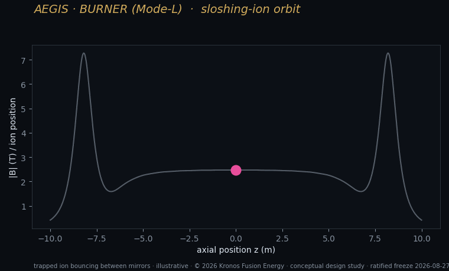
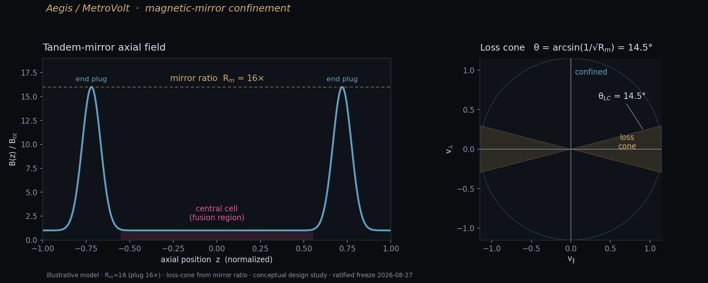
Let me put real dimensions and real fields on the thing, because they are public and they matter.
| Quantity | Value |
|---|---|
| Configuration | Axisymmetric D–³He tandem mirror |
| Central-cell length | 440 m (design point); 1,400 m (stretched) |
| Plasma radius | 0.86 m |
| Central-cell field | 4.35 T |
| Mirror-throat field | 17 T |
| End-plug throat field | 26.49 T (ion end) / 39.74 T (thermal end) |
| Helium-3 fuel fraction | ~0.30 |
| Neutron power fraction f_n | 5.44% |
| Ion temperature | ~80 keV |
| Plasma gain Q_p | ≈ 3.5 |
| Engineering gain Q_E | ~1.318 |
| Net electric | +850 MWe (440 m) → +2,832 MWe (1,400 m) |
| Required plug density ratio | n_p/n_c ≈ 16 (the open requirement) |
The plasma in the central cell sits at a radius of about 0.86 metres — a slender column — inside a superconducting solenoid producing a central field of about 4.35 tesla. That central cell is where fusion happens, and its length is the design's main scaling lever: the longer the central cell, the more plasma volume, the more fusion power, and — this is the useful part — the engineering gain barely changes with length while the raw electrical output scales up with it. That is why the same physics gives us two very different products from one design: a 440-metre machine and a 1,400-metre machine are, in the words of the paper, "the same physics at different central-cell lengths." The machine is genuinely thin for its length — at 440 metres it is something like five hundred times longer than it is wide, a plasma thread strung between two magnetic anchors.
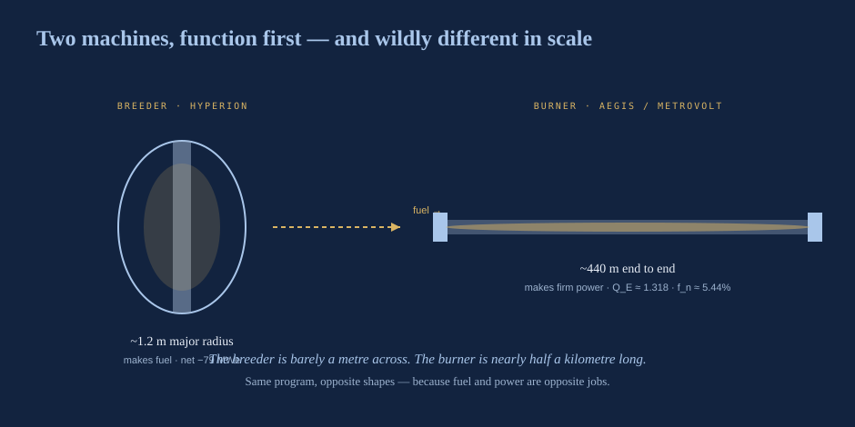
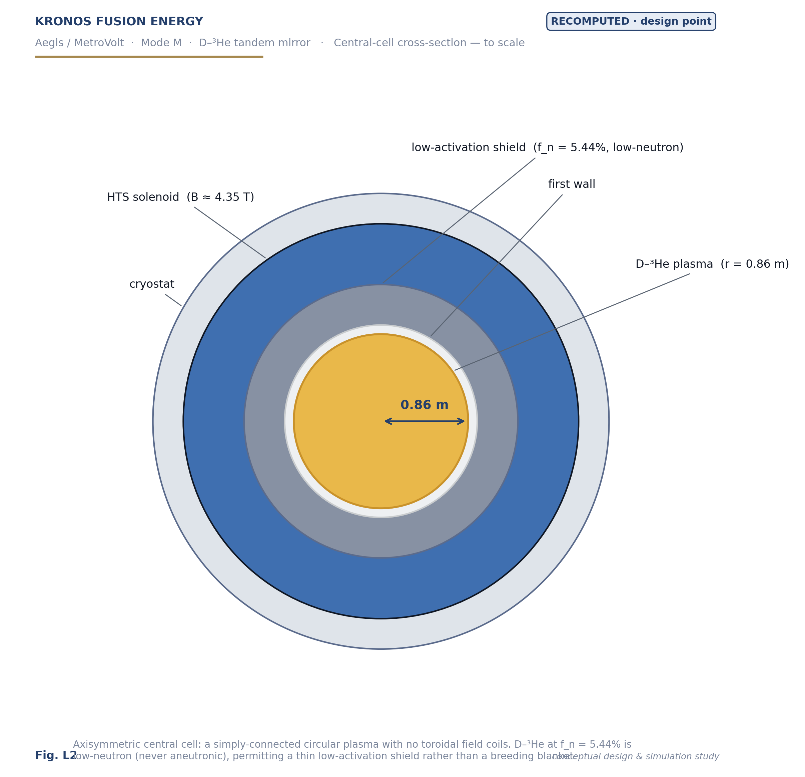
The drama is at the ends. Each mirror throat rises to about 17 tesla at the central-cell edge, and the high-field end plug beyond it is reported as a pair of numbers rather than one, because the two ends do different jobs: about 26.49 tesla at the ion end and about 39.74 tesla at the thermal end. Those are ferocious fields — but here is a fact that matters for whether any of this is buildable: 26.49 tesla is only about 0.82 times an existing, already-demonstrated all-superconducting magnet record of 32.35 tesla, and even the higher thermal-end figure is only about 1.24 times it. The plug field, in other words, is not the extrapolation. It is at or near what magnets have already reached. What is hard about the plug is not the field strength; it is two other things — the small-bore winding that has to carry that field, and above all the plasma density the plug must hold. I will come to both, because between them they are the honest gate of the whole machine.
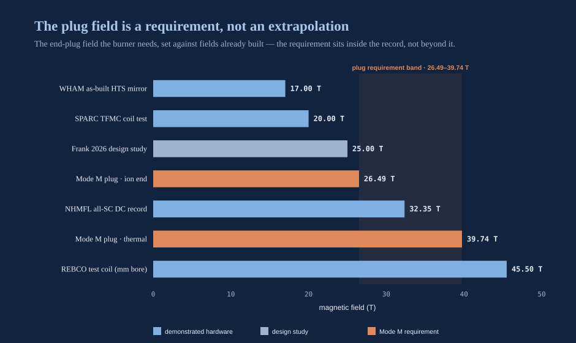
Turning particles into current — directly
Now the part that justifies the whole architecture, and the part that still feels like magic to me even after I have done the arithmetic a hundred times: direct energy conversion. For two centuries every power plant on Earth has done the same crude thing — burn something, boil water, spin a wheel. The burner refuses. It catches its fusion products in flight and turns their motion straight into current, the way you might harvest lightning as electricity instead of merely watching it strike.
In an ordinary power station — coal, gas, fission, or a D–T fusion plant — energy arrives as heat, and heat drives a turbine, and the turbine is shackled to the Carnot limit: you throw away more than half of what you started with just because thermodynamics says a heat engine must. The burner's charged exhaust offers a way around that tax. A charged particle flying out of the mirror's end is, in effect, a tiny current already. If you let that beam fly into a series of collector electrodes held at rising voltages, the particles climb an electrostatic hill, giving up their kinetic energy to the electrodes as they slow — and what you collect at the electrodes is electricity. No boiler. No steam. No turbine. The kinetic energy of the fusion products becomes voltage and current more or less directly.
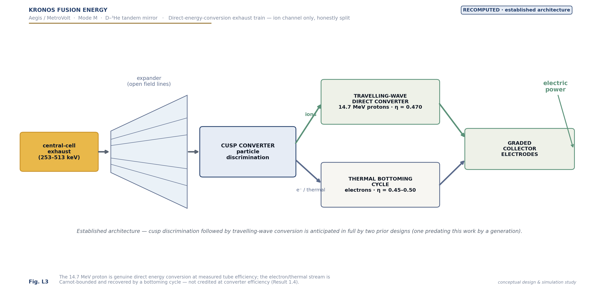
The exhaust train that does this is not a Kronos invention, and we are careful to say so: cusp-type particle discrimination to sort the species, followed by a travelling-wave converter for the high-energy protons, is architecture that prior tandem-mirror designs anticipated in full a generation ago. We adopt it as established practice, and we cost it out on measured efficiencies rather than the aspirational 70–80 percent that the field has historically assumed. That distinction — measured, not hoped — is the spine of our whole burner analysis. Direct conversion is important enough, and subtle enough, that it gets its own dedicated treatment later in this chapter; here I want only to establish what it buys the burner and what it honestly costs.
The efficiencies we actually put in the ledger are sober ones, each tagged with its basis:
| Stage | Channel | Efficiency | Basis |
|---|---|---|---|
| Ion direct converter | ions | 0.48 | best measured ion tube (below the two-stage optimum) |
| Electron → thermal bottoming | electron/thermal | 0.45 | turbine practice; Carnot-bound |
| Thermionic topping (end-wall dump) | thermal | 0.505 | measured thermionic-class device |
| Residual wall heat/radiation | thermal | 0.10 | thermionic review, Carnot-consistent |
The ion collector's 0.48 is the best real ion-tube ever demonstrated, and we flag it as sitting below the two-stage optimum rather than pretending otherwise. The electron and thermal stream is recovered by a bottoming cycle at about 0.45, because thermal energy converted to electricity is Carnot-bound no matter how you dress it. These are not converter-brochure numbers — the field has for decades assumed an aspirational 70 to 80 percent for direct conversion, and we refuse it. The crucial discipline is that the machine's headline closure uses no efficiency that has only been projected rather than measured; the ion tube's 0.48 carries the whole balance on its own.

With those efficiencies, the machine's power balance closes with gain to spare. The bookkeeping is an engineering gain — the ratio of gross electricity produced to the electricity you have to spend running the plant:
**Q_E = P_electric (gross) ÷ P_recirculating**
In plain words: divide all the electricity the converters make by all the electricity the machine consumes to keep itself burning — the power that drives the plugs, the magnets, the cryogenics, the systems. If that ratio is above one, the plant is a net generator; the further above one, the more it sends to the grid for each unit it feeds back on itself. At the design operating point the gross direct-conversion electricity (about 3,522 MW in the 440-metre machine) exceeds the recirculating power (about 2,672 MW) to give Q_E ≈ 1.318, and a net electrical output of +850 MW at 440 metres, rising to +2,832 MW in the 1,400-metre configuration. Same gain, longer machine, more net power. That length independence is the design's quiet superpower: the engineering gain and the neutron fraction are set by the physics of the plug and the fuel, which do not change when you stretch the central cell, while the raw output scales with the length you add. A 55-metre self-fuelled demonstrator nets on the order of a hundred megawatts; the 440-metre unit, +850; the 1,400-metre unit, +2,832. One physics, a dial for scale.
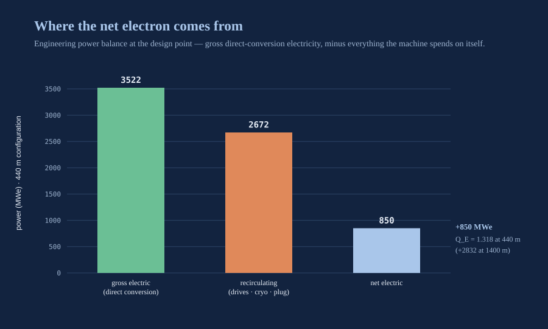
Underneath the engineering gain sits a healthier plasma gain of about 3.5 — the ratio of fusion power to the power injected to sustain the burn — so the recirculating burden is real but not pathological.
And here, before the numbers multiply any further, is the place to lay out every Q in this book side by side — because this is the page where two of them collide, and the title of the book carries a third. A field guide to the Q's:
| Symbol | What it measures | Where it lives | Value | Status |
|---|---|---|---|---|
| Q_sci | Fusion power ÷ plasma heating power | Breeder (Hyperion) | ≈ 3.076 | Solved on paper, published, reproducible |
| Q_p | Fusion power ÷ injected sustaining power | Burner, first closure | ≈ 3.5 | Design closure, gated at the plug |
| Q_E | Gross electricity ÷ recirculating electricity | Burner, first closure | ≈ 1.318 | Design closure on measured efficiencies |
| Q40 | The fortyfold return in this book's title | The program's north star | 40 | A target, deliberately — not a result |
Read the last row carefully, because I refuse to let this book do the thing the field has done for seventy years — let a target quietly dress itself up as a result. Q40 is not the number any first unit will print. The numbers a first unit prints are the ones above it: a scientific gain near 3.4 that runs a fuel foundry, a plasma gain near 3.5 and an engineering gain of 1.318 that make the first burner a modest net generator. Q40 is where the program is pointed — the fortyfold plasma return the burner line is built to climb toward across machine generations, as plug performance is demonstrated and pushed past its minimum, as the direct-conversion train banks its bounded upsides, as the fleet iterates down its learning curve on abundant fuel. It is the destination on the dashboard, printed in the same table as the odometer, precisely so you can never mistake one for the other. A reader who catches the gap between 1.318 and 40 has not caught an error; they have caught the entire honest architecture of this program — first units that merely work, on the way to a fortieth-generation promise held to a forty-year clock.
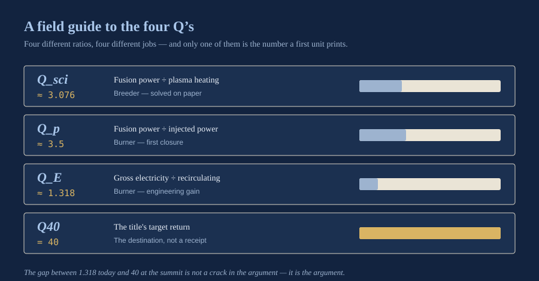
Two features of that closure are worth naming, because they are the difference between a robust result and a fragile one. The first: closure is a helium-3 fraction, not a date. At the required plug density, the machine generates across a whole band of fuel mixtures — helium-3 fractions from about 0.20 to 0.43 — with the neutron fraction falling from 9.5 percent at the lean end to 2.8 percent at the rich end and the gain peaking at 1.318 in the middle, at the 0.30 we chose. That is a designed operating window, not a single knife-edge point.
The second is the more instructive, because it is a negative that reveals the mechanism. Run the same machine on pure deuterium — no helium-3 at all — and it does not close at any plug ratio: the gain collapses to about 0.42 and the machine goes deeply net-negative. And the reason is not confinement, which is the answer everyone reaches for. It is a charged-power budget. At the operating point, a pure-deuterium plasma yields only about 697 megawatts of charged power to fund an axial loss of some 4,055 megawatts — a five-and-a-half-fold shortfall, and, tellingly, a shortfall whose ratio does not change with the length of the machine. You cannot build your way out of it by making the central cell longer, because lengthening scales the loss and the charged power together. Adding helium-3 is what closes the gap: the clean D–³He channel adds charged power the pure-deuterium plasma never had. That is why the fuel is not a preference but a requirement — and why the failure of the pure-deuterium case is a structural fact about the charged-power ledger rather than a fixable confinement problem.
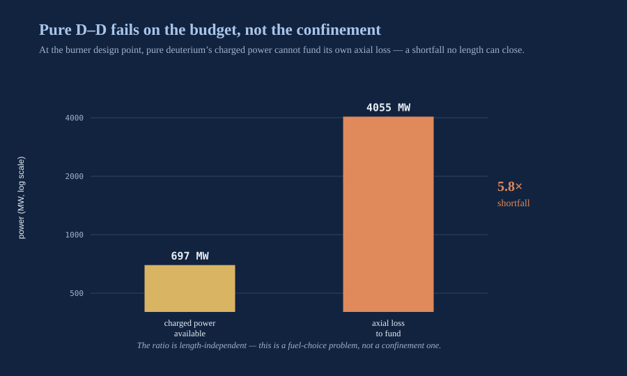
There is a quieter physics result folded into that balance that I should surface, because it is the burner paper's principal new contribution and it works in the machine's favour. One of the loss channels in a hot magnetised plasma is synchrotron radiation — the light a gyrating electron throws off as it spirals. Conventional wisdom treats that loss as a fixed fraction of the fusion power, a fixed tax. It is not. The plasma reabsorbs its own synchrotron light up to a certain harmonic of the cyclotron frequency; only the harmonics above that cutoff escape. And the cutoff is not a fixed property of the plasma — it moves with the size of the machine:
n\* ∝ a^(1/3)
The effective harmonic cutoff, n\, scales as the one-third power of the plasma radius, a. The reason is a clean competition: the optical depth at a given harmonic falls steeply with harmonic number — roughly as its inverse cube — while the surface power that can escape scales with the plasma's surface-to-volume ratio, which is to say inversely with radius. Set the two equal and the crossover harmonic climbs as the cube root of the radius. A bigger machine therefore reabsorbs *more of its own synchrotron light, at the same density and field; a smaller one radiates more of it away. That turns a loss everyone had carried as a constant into a design lever that improves as the machine grows — the nearest prior treatment modelled it as a fixed scalar and simply cannot reproduce this size dependence — and it is one reason the numbers close where they do rather than a hair short. I will be careful about its status: it is a reparameterisation, not a measurement. It collapses the synchrotron uncertainty onto a single experimentally addressable quantity rather than resolving it, and the wall reflectivity the budget assumes has not been measured at the relevant frequencies. The margin, not the optical constants, carries the conclusion.
The electron surprise
There is one recent result worth flagging here, because it corrects a mistake the whole field has been making — though I will only tease it, since the direct-conversion section later in this chapter works it out in full. The received wisdom holds that the 14.66-MeV proton carries most of the charged energy, so a good ion converter should recover most of the exhaust; that describes the particles at birth, not the spectrum that actually reaches the ends of the machine. Follow the protons as they slow down and the split inverts: most of the charged energy exits as a directed electron stream, not as ions — the larger axial channel, and the one no established converter was built to catch. That relocates the hard problem onto the electron channel, and recovering it is a bounded upside the later section takes up in detail. It is not what the burner's closure rests on. What the closure rests on is the plug, and that is the gate.
The one real gate: end-plug density
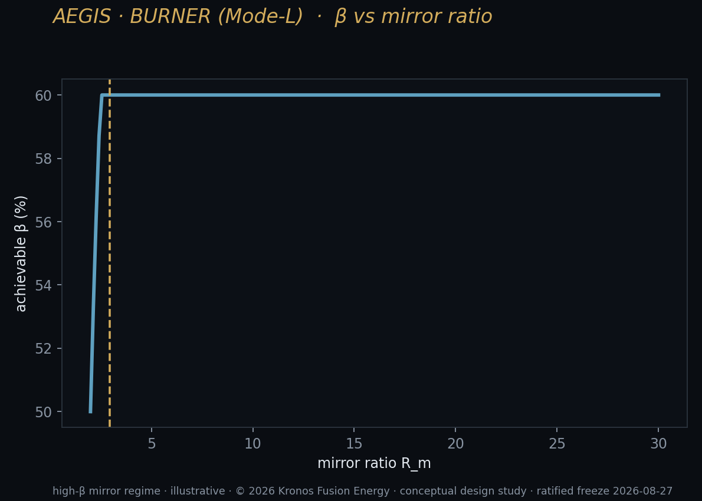
Here is the honest heart of the chapter.
Everything above — the 1.318 gain, the +850 megawatts, the clean burn — is contingent on a single requirement holding at the end plugs. We built the whole picture of ambipolar confinement toward this point: the depth of the electrostatic well that holds the central-cell fuel in is set by the plug-to-central density ratio, through that logarithm I flagged earlier. The deeper you want the well, the more you must overstuff the plug relative to the middle. And one number in this neighbourhood must be carried as what it is: the 6.25 percent warm-plasma fill at the plug is a threshold — the γ = 0 boundary at which the drift-cyclotron loss-cone instability is quenched — not a margin to be spent (gate BU-L2-A5). And the newest kinetic result adds an honest edge to it: in first-principles particle-in-cell runs, the warm fill that stabilizes the loss-cone mode does not quench the separate Alfvén ion-cyclotron branch (gate BU-L2-A7) — so the plug carries two named mode families, one handled, one watched.
Closure at our design point needs a plug-to-central density ratio of about 16. That is the requirement. And it is a hard one: it corresponds to a plug density around 4 × 10²¹ particles per cubic metre — roughly 347 times what any tandem mirror has ever actually operated at, some two full orders of magnitude beyond the operated record. This is not the magnetic field (the field, remember, is at or inside the demonstrated record). It is the density you must sustain in the plug, and it is, candidly, the design's single largest open requirement. The dependence is unforgiving in exactly the way the logarithm warned: because the confining wall grows only as the log of the ratio, you need an enormous ratio to build a wall tall enough — and at the reference plug ratio of about 10 that machines have plausibly approached, the same power balance does not close. The gain falls to about 0.63 and the machine goes net-negative. There is no gentle slope down from 1.318 to break-even; the closure lives at the top of the density hill or nowhere. The machine either reaches the wall it needs or it does not generate. That is why I keep insisting the plug is the gate and not one item on a list — every other number in the design has margin; this one has none until someone demonstrates the density.
And reaching that density is only half of it. To hold a plug that dense at a potential high enough to matter, you also need the plug electrons kept hot — which means you need the thermal barrier working, the potential dip that insulates the plug from the central cell. That is the deep physics question, and it is the one with a scar on it. A thermal barrier of this kind was attempted on a historical tandem mirror a generation ago and returned a measured negative — the barrier could be formed but not sustained in the regime the design needs. A careful re-analysis attributes that failure to programmatic causes rather than fundamental ones, and I believe that reading. But a measured negative is a measured negative, and I will not dress it as anything else. Compounding the honesty: no one has yet named a stability actuator for this plug regime — the specific knob you would turn, in real time, to keep a plug this dense from tearing itself apart. So the gate is really three questions stacked together: can you reach the plug density, can you hold it with a working thermal barrier, and can you keep it stable once you have it. The field is not the risk. The converters are not the risk. This is the risk.
So let me say it in one clean sentence: the burner's physics closes on paper, on measured efficiencies, and reproducibly — provided the plug reaches and sustains a density regime we have specified but that no one has yet demonstrated. That "provided" is the whole difference between a design and a power plant, and I would rather name it than blur it.
The burner closes on the numbers we can defend, with exactly one requirement we cannot yet demonstrate. Naming that gate is not weakness. It is the difference between a design study and a sales pitch.
Three gates, counted honestly
It helps to lay the whole risk picture out on one table, because a design study of this class usually blurs its extrapolations into a single optimistic optimum, and I would rather count them.
| Gate | Type | Status |
|---|---|---|
| Thermal barrier | Physics | Attempted historically, returned a measured negative; re-analysis blames programmatic, not fundamental, causes; no stability actuator yet named |
| Plug density (n_p/n_c ≈ 16) | Physics requirement | ~347× any operated tandem-mirror plug; the design's single largest open item |
| Electron direct conversion | Physics requirement | Absent from the record at the relevant energy; the closure does not use it |
| Plug-magnet structure | Engineering — retired | Field within the demonstrated record; stress-managed winding closes at 0.26–0.37 of the strain cap |
Read that table the right way. The plug field — 26.49 tesla at the ion end — is not on the risk list at all; it sits at about 0.82 times an already-demonstrated all-superconducting magnet. The electron direct converter is a genuine open requirement, but the headline closure is deliberately built without it, so it is upside rather than a load-bearing assumption. And the plug-magnet structure, while a real problem, is an engineering one: at the plug's physically required bore the naive winding over-stresses the conductor, but a stress-managed architecture — a lower winding-pack current density, a segmented and pre-compressed winding, and a tungsten-based neutron shield made to serve double duty as the structural pre-compression shell — shrinks the effective bore and, because hoop stress scales with bore, brings the coil back inside its strain limit with margin. That work is detailed in the magnet chapter; that analysis has since been carried through, and the coil gate is retired: the stress-managed winding closes at 0.26–0.37 of the conductor’s strain cap. What remains at the plug is one gate, and it is physics, not engineering. What is genuinely, irreducibly physics is the thermal barrier and the plug density it must sustain. Everything else has a named engineering path.
Where the modelling stands
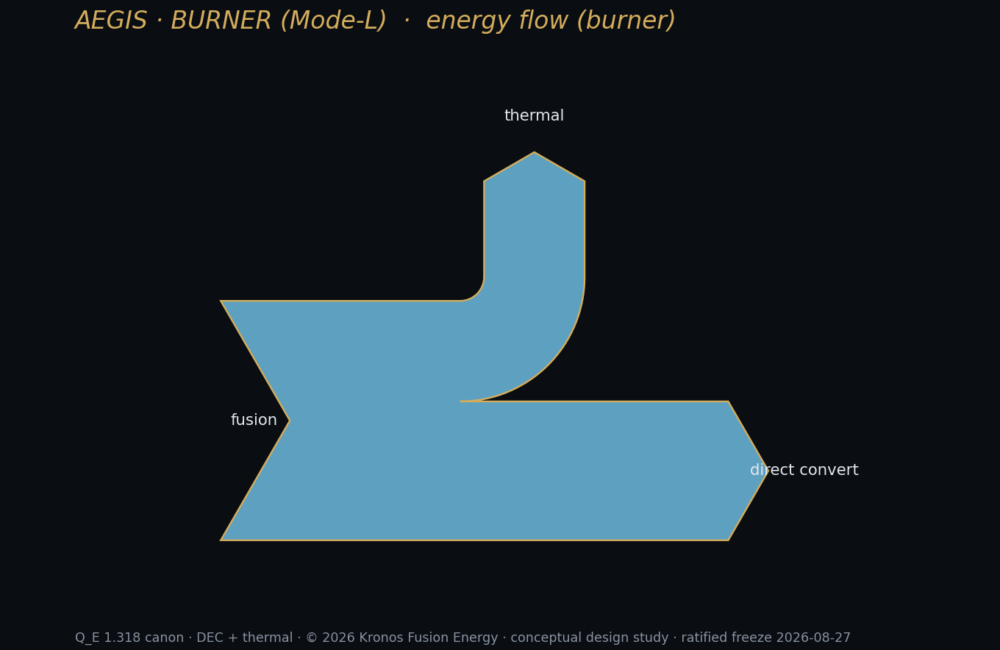
This is the newest part of the story, and it is a work in progress, so I will report it as one.
We have built a fast design surrogate on the burner power-balance model — a machine-learning stand-in trained on the physics, accurate enough (a fit quality of R² ≈ 0.98) to explore the design space in microseconds instead of hours. That surrogate reproduces the closure and, encouragingly, shows net gain emerging at a plug density ratio around 13.8 — approaching, though not yet reaching, the target of 16 that yields Q_E ≈ 1.318. In other words the tool agrees with the hand analysis about where the machine wants to live, and it puts the gate exactly where the physics says it is: at the plug. A surrogate that fast is not just a convenience; it is what lets a control system explore thousands of what-if operating points between one plasma measurement and the next, which is how a machine this stiff around its gate will eventually be kept inside a safe envelope in real time. I will be plain about the computational honesty behind it, because the field oversells this: the useful acceleration here is classical machine learning and quantum-inspired tensor methods run on ordinary hardware. Quantum computing offers no near-term advantage for this problem and we do not pretend otherwise; where quantum genuinely helps in the near term is sensing — better plasma diagnostics — not computation.
I will be equally candid about what has not worked. An early attempt to model the fast-ion kinetics with a Fokker–Planck prototype was abandoned — it produced a helium ion fraction of 1.6 percent against the expected 12 percent, and a survey of the available codes confirmed the deeper reason: the alpha-channelling efficiency that the burner needs is not a turnkey output of any existing simulation. The burner's kinetics live in a different tool family from the breeder's. Where Hyperion's turbulence is a tokamak problem that GPU-accelerated gyrokinetics handle well, the burner's mirror kinetics need specialist mirror codes and genuine custom development, pursued through collaboration rather than in-house brute force. So the two machines advance on two tracks: the breeder's physics de-risking runs on one set of tools and is well underway; the burner's advances separately, as a collaboration-and-custom-development problem, and it is the later, harder act. That is exactly what the timeline expects of it — a first roughly 100-megawatt test burner around 2032, a commercial fleet from 2036 — and it is why I am telling you it is not finished.
Two housings: Aegis and MetroVolt
The burner is one machine, but it goes to market in two housings, sized and hardened for two very different customers. Hold on to one fact as you read both: the physics is identical. The engineering gain of 1.318 and the 5.44 percent neutron fraction do not change between them. What changes is the length of the central cell — and therefore the net power — and the mission wrapped around it. Central-cell length is the free dial; everything else is fixed by the same closed physics.
Aegis is the burner as fixed-site defense power. Not shipboard — fixed installations, where the mission is grid-independent, survivable, continuous power for critical loads: base power, radar, directed-energy systems. The defense case leans directly on the low-neutron fuel, because 5.44 percent instead of 80 percent means a plant people can work near, at a defensible standoff, with shielding sized to a gentle source rather than a D–T neutron torrent. A compact self-fuelled demonstrator — a roughly 55-metre unit delivering on the order of a hundred megawatts net (about +104 MWe at the reference point), fed by helium-3 that decays out of the breeder's own stored tritium — is the credible first build, the ~100-megawatt test burner the timeline places around 2032, and it points the way to the 440-metre unit at +850 megawatts. Aegis is deliberately the near end of the story: the smallest honest machine that proves the closure in hardware, on fuel the breeder can already supply.
MetroVolt is the same machine as continuous baseload for the grid and, above all, for data centres — the loads that now define what "firm power" is worth. Here it is fielded as a roughly one-gigawatt commercial unit, co-located with the demand it feeds, its direct-conversion train synchronised to the grid, its waste heat available to the site. That is a deliberate choice, not a limit: the design's dial runs out past two gigawatts at 1,400 metres, but a gigawatt-class unit is easier to finance, easier to site, and descends the manufacturing learning curve faster because you build more of them — and it happens to match the scale of the largest AI campuses now on the drawing board. The reasoning gets its own treatment in the markets chapter; here it is enough to say that the proven headroom is large and the chosen unit is deliberately modest. Same gain, same clean burn; the difference from Aegis is mission, not physics. MetroVolt is also the configuration that only reaches fleet scale once fuel is abundant — which is to say once the Moon is in the supply chain.
And this is where the book's second forty finally lives. The whole argument of The Fusion Energy Equations is Q40 and forty dollars a megawatt-hour within forty years — and the forty-dollar electron is the burner's electron. But it comes with a condition I will not hide: firm power at that price depends on fuel that is cheap at fleet scale, and the helium-3 to run a fleet of these machines does not exist in useful quantity on Earth. Early burners run on the trickle the breeder makes. The scale story — dozens of gigawatts of clean firm power — waits on helium-3 mined from the Moon, arriving around 2040. That is the subject of a later chapter, and it is the hinge on which the burner's economics finally turn. For now, hold the shape of it: the breeder makes the fuel; the burner makes the power; and the price that makes the power worth having waits on the Moon.
The cleanest fire humanity has ever lit
Step back from the engineering for a moment and look at what this machine actually is, because it is the answer to a question older than the industrial age.
For as long as we have understood the sky, we have known where the real energy lives. A century ago, physicists working out why the Sun does not simply burn out arrived at a staggering truth: the stars are not on fire in any chemical sense — they are fusing light nuclei into heavier ones, converting a whisper of mass into the flood of light that makes life on this planet possible. From that moment the dream was fixed. If we could bring that reaction down to Earth and cage it, we would hold the source that powers the cosmos itself — on tap, in a building. Generation after generation of scientists spent their careers reaching for it and handed the problem, unfinished, to the next. It became the quiet, stubborn ambition of physics: not a better way to boil water, but a way to stop boiling water altogether and take our power directly from the same reaction that lights the universe. The burner is that ambition, reduced at last to hardware.
And it is, by a wide margin, the cleanest fire our species has ever learned to make. That is not a slogan; it falls straight out of the numbers you have already met in this chapter.
Start with the exhaust, because that is where every other fire we have ever lit betrays us. Wood, coal, oil, gas — every combustion source that ever warmed a human being works by dumping carbon into the only atmosphere we have. The burner emits none. No carbon dioxide, no soot, no sulphur, no nitrogen oxides, no mercury, no fine particulate — nothing goes up a stack, because there is no stack and no combustion. Beyond electricity, the reaction makes essentially one thing: helium, an inert, harmless gas the world is actually short of.
Then look at the waste, which is where fission — fusion's nuclear cousin — pays its hardest price. A fission plant leaves behind spent fuel that stays dangerous for tens of thousands of years, and material that can be diverted toward weapons. The burner has no such ledger. Its fuel is deuterium and helium-3; its products are helium and a deliberately small trickle of neutrons. That trickle is the whole environmental design story of this machine, and it is worth stating precisely.
The burner runs on the fuel that lit the stars, and leaves behind the gas that fills a child's balloon. The exhaust of the cleanest fire we can make is helium.
The reaction we chose — deuterium with helium-3 — puts only 5.44 percent of its energy into neutrons, against roughly 80 percent for the conventional deuterium–tritium reaction. That single number is the difference between a machine that slowly turns itself into radioactive waste and one that does not. Fewer neutrons means far less of the surrounding structure is activated; what activation remains decays on the scale of a working human lifetime, not geological time — low-level waste an ordinary industrial site can manage, not a burden handed to civilizations that do not yet exist. There is no high-level waste stream, no plutonium, nothing a state or a group could turn toward a bomb. The material honesty of the fuel choice is the environmental case.
Safety belongs in the same breath, because for the public "nuclear" and "catastrophe" have been welded together for seventy years, and fusion breaks the weld. There is no chain reaction to run away — a fusion plasma is not a stockpile of fuel waiting to release stored energy; it is a fragile state that must be actively held, and the instant anything goes wrong it simply stops. There is no meltdown physics here, no Chernobyl, no Fukushima, because the failure mode of a star-in-a-bottle is to cease being a star, in milliseconds. The machine holds only seconds of fuel at any moment. You cannot make it explode; you can only make it turn off.
Now the resource question, which is where the dream becomes genuinely inexhaustible. Deuterium is in every glass of water on Earth — one hydrogen atom in roughly every 6,400 — and the oceans hold enough to run civilization for longer than the Sun has left to shine. The scarce half of the fuel, helium-3, is the reason a later chapter goes to the Moon; but the point that matters here is directional. We are not drawing down a finite reserve our grandchildren will have to do without. We are learning to burn the most abundant fuel in the universe.
Set the burner against the clean sources we already praise, and its advantage sharpens rather than softens:
| Dimension | Fossil combustion | Fission | Wind / solar | The burner (D–³He) |
|---|---|---|---|---|
| Carbon & air pollution | Severe | None in operation | None in operation | None |
| Long-lived / high-level waste | Climate is the waste | Millennia; weapons-usable | None | None — low-level, lifetime-scale only |
| Catastrophic accident path | — | Meltdown physics exists | None | None — plasma self-extinguishes |
| Firm, on-demand power | Yes | Yes | No — intermittent | Yes |
| Land & materials footprint | Large (extraction) | Moderate | Very large per MWh | Small, dense |
| Fuel horizon | Decades, and warming | Centuries | Diffuse but endless | Effectively limitless |
Read down the last column. It is the only one in the table with nothing in the "cost" rows and a yes in the "firm" row — clean like renewables, firm like fossil and fission, and without the waste ledger of either nuclear path. There is a reason no source before it could claim that whole column at once: nothing before it took its energy from the same reaction as the stars.
And there is one more environmental gift specific to this burner, hidden in its power train. Because it converts charged particles to electricity directly — decelerating them against a voltage instead of boiling water to spin a turbine — it rejects far less waste heat to the environment than any thermal plant. A steam-cycle plant throws more than half its energy away as warm water and warm air; the burner's direct-conversion architecture keeps much more of it on the wire. Less thermal pollution of rivers and air is not the headline, but it is real, and it compounds every advantage above.
So when I say the burner is the cleanest fire humanity has ever lit, I mean it as an engineering claim with a receipt behind every word: no carbon, no long-lived waste, no meltdown, no weapons path, effectively limitless fuel, and less waste heat than anything thermal — all of it flowing from the 5.44 percent neutron fraction and the direct-conversion train you have already watched close on the numbers. The centuries-old dream was never really about a cleverer boiler. It was about taking our energy from the sky's own reaction and giving the atmosphere back to itself. That is the machine in this chapter.
For two hundred years we powered progress by setting the past on fire. The burner is the first source that lets prosperity and a living planet stop being a trade.
The burner is the promise an earlier version of this book was really reaching for — clean fusion electricity, made without a steam cycle, from a fuel that does not wreck its own machine. It is the machine that could finally uncouple human prosperity from combustion, and power a civilization the size of ours without asking the sky to absorb the exhaust. What this book can now add is discipline: the shape is right, the fuel is right, the power balance closes on numbers we can defend — and there is exactly one requirement, at the plug, that we have named rather than assumed. I will not let the grandeur of the vision blur that single honest word. That is the state of the burner: a star in a straight bottle, one gate from generating. It is the later machine, and it is worth the wait.